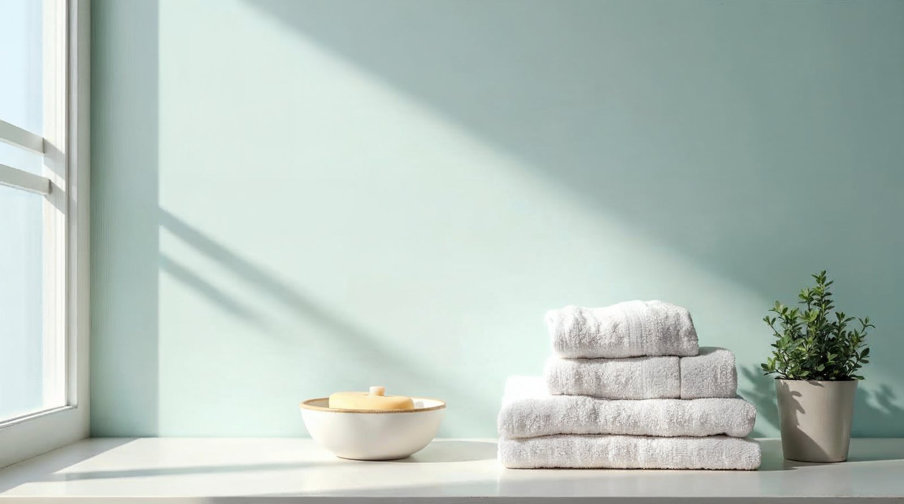
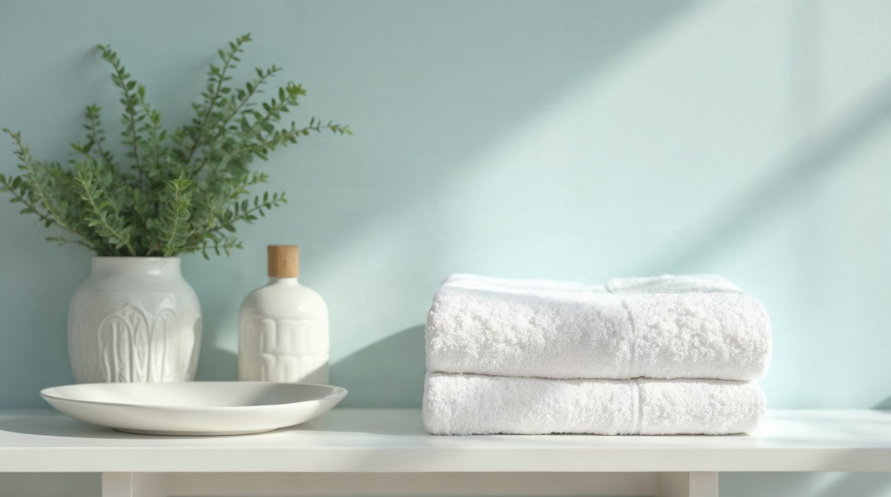
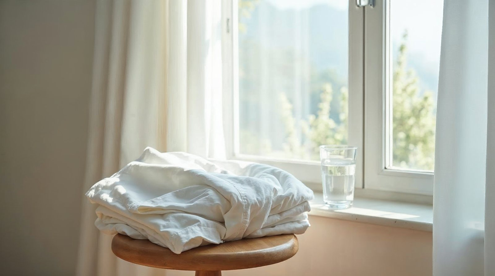
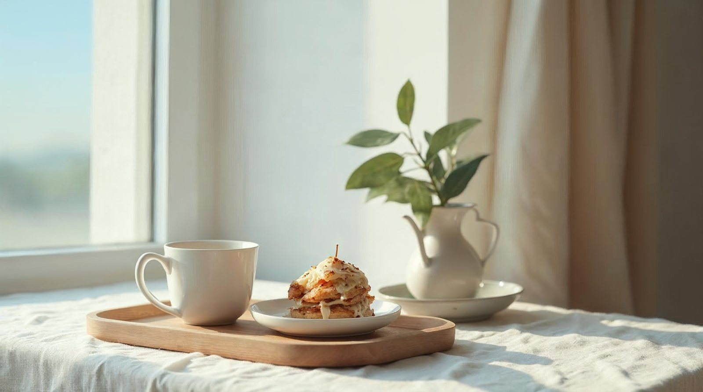
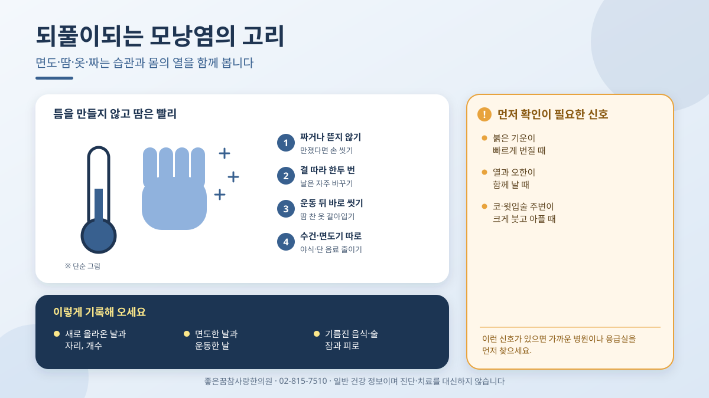

이종호 한의사 감수좋은꿈참사랑한의원 대표원장 (한의사 면허번호 19769)발행 2026-11-26 · 수정 2026-11-26
이 글의 차례
샤워를 하다가 허벅지 안쪽에 붉은 좁쌀 같은 것이 여러 개 올라온 것을 봅니다. 가운데 노란 고름이 살짝 비쳐서 손톱으로 눌러 짜 냈는데, 며칠 뒤 바로 옆에 또 올라옵니다. 턱수염 자리나 엉덩이, 겨드랑이에도 비슷한 것이 자꾸 생겨 신경이 쓰입니다.
진료실에서 모낭염 이야기를 꺼내시는 분들은 대개 같은 말씀을 하십니다. "피부과에서 약을 먹으면 들어가는데, 끊으면 또 올라와요." 한두 번이면 넘어가겠는데, 몇 달씩 되풀이되니 지치기도 하고 무엇이 문제인지 답답하기도 하다고요.
모낭염은 털이 자라는 작은 구멍, 곧 모낭에 염증이 생기는 것입니다. 대부분은 피부에 늘 살고 있는 세균이 작은 상처나 막힌 모낭으로 들어가 생깁니다. 그래서 피부를 다치게 하는 습관과 땀이 차는 환경, 몸의 방어력이 함께 얽혀 되풀이되곤 합니다.
저는 모낭염이 되풀이될 때 피부에 생긴 뾰루지만 보지 않으려고 합니다. 언제 어디에 생기는지, 면도와 옷과 땀은 어떤지, 잠과 식사, 혈당은 어떤지를 함께 여쭙니다. 되풀이되는 데에는 대개 되풀이되는 생활의 고리가 있기 때문입니다.

모낭염은 어떤 상태인가요?
모낭염은 털구멍을 중심으로 붉은 구진이나 작은 고름 주머니가 생기는 상태입니다. 하나하나의 크기는 작지만 여러 개가 한꺼번에 올라오는 경우가 많고, 가운데 털이 박혀 있는 것이 보이기도 합니다. 가렵거나 따끔거리고, 눌렀을 때 아픈 경우가 많습니다.
잘 생기는 자리는 털이 있고 마찰과 땀이 많은 곳입니다. 턱과 목의 수염 자리, 두피, 겨드랑이, 가슴과 등, 엉덩이, 허벅지 안쪽, 종아리가 대표적입니다. 면도나 제모를 하는 자리에서 특히 흔합니다.
염증이 깊어지면 모낭 주변까지 크게 붓고 단단하며 아픈 덩어리가 되는데, 이를 흔히 종기라고 부릅니다. 여러 개의 종기가 이어져 넓게 부어오르기도 합니다. 이렇게 커진 경우에는 피부과에서 먼저 진료를 받으셔야 합니다.
왜 모낭염이 자꾸 되풀이될까요
피부에는 늘 여러 세균이 살고 있습니다. 건강한 피부는 이 세균이 모낭 속으로 들어가지 못하게 막아 주는데, 이 벽에 틈이 생기거나 모낭이 막히면 염증이 시작됩니다. 되풀이되는 이유는 이 틈을 만드는 일이 생활에서 반복되기 때문인 경우가 많습니다.
모낭염을 부르는 흔한 고리를 짚어 보면 이렇습니다.
- 무딘 날로 면도하거나, 털이 난 반대 방향으로 여러 번 미는 습관
- 땀이 찬 운동복이나 꽉 끼는 속옷, 스타킹을 오래 입고 있는 일
- 뾰루지를 손으로 짜거나 뜯는 습관
- 수건, 면도기를 함께 쓰거나 오래 축축한 채로 두는 일
- 소독이 덜 된 온수 욕조나 수영장을 이용한 뒤
- 기름진 크림이나 오일을 털이 많은 자리에 두껍게 바르는 일
몸 쪽의 이유도 함께 봐야 합니다. 혈당이 높으면 피부의 방어력이 떨어져 모낭염이나 종기가 잘 생기고 오래가는 경향이 있습니다. 체중이 늘어 살이 접히는 곳이 많아지거나 땀이 많아진 경우에도 되풀이되기 쉽습니다.
잠이 부족하고 과로가 이어지는 시기, 큰 병을 앓고 난 뒤, 스테로이드나 면역을 누르는 약을 드시는 동안에도 모낭염이 잦아질 수 있습니다. 코 안에 세균을 지니고 있는 분은 그 세균이 손을 통해 피부로 옮겨 가 되풀이되는 경우도 있어서, 반복이 심하면 피부과에서 함께 확인합니다.
한의학에서는 기름지고 단 음식, 술이 이어지며 몸에 습열이 쌓인 흐름이나, 기운이 처져 피부가 스스로를 지키는 힘이 약해진 흐름을 함께 구분해 봅니다.
여드름이나 다른 뾰루지와는 어떻게 다를까요?
여드름은 기름샘이 많은 얼굴, 가슴, 등에 주로 생기고, 하얗거나 검은 면포, 곧 막힌 피지가 함께 보이는 것이 특징입니다. 모낭염은 면포 없이 털구멍마다 고르게 작은 고름이 올라오는 경우가 많고, 면도한 자리나 땀이 차는 자리에 몰려 있습니다.
곰팡이가 원인인 모낭염도 있습니다. 가슴과 등, 어깨에 크기가 고른 붉은 좁쌀이 가렵게 퍼지고, 땀을 많이 흘리는 여름이나 운동 뒤에 심해지는 경우입니다. 여드름 약이나 세균을 다루는 약으로는 잘 들어가지 않아서, 되풀이된다면 피부과에서 구별해 보는 것이 좋습니다.
면도 뒤 털이 피부 안쪽으로 말려 자라며 생기는 뾰루지도 있습니다. 곱슬기가 있는 수염에서 흔하고, 털이 피부 아래에서 고리처럼 보이기도 합니다. 이때는 면도 방법을 바꾸는 것이 관리의 중심이 됩니다. 털을 너무 바짝 깎지 않고 조금 남겨 두는 것만으로도 안으로 말려 자라는 털이 줄어드는 경우가 있습니다.
이렇게 겉보기에는 비슷해도 원인이 다르면 다루는 방법도 달라집니다. 같은 약을 써도 잘 듣지 않는다면, 원인이 다른 뾰루지일 가능성을 함께 생각해 봅니다.

면도와 제모는 어떻게 하면 좋을까요?
모낭염이 수염 자리나 겨드랑이, 다리처럼 면도하는 곳에 잘 생긴다면 면도 습관부터 살펴봅니다. 작은 차이가 생각보다 큰 몫을 합니다.
면도 전에는 따뜻한 물로 털을 충분히 불리고, 면도 거품이나 젤을 넉넉히 바릅니다. 날은 털이 자란 방향을 따라 가볍게 한두 번만 밀고, 같은 자리를 여러 번 긁지 않습니다. 날은 자주 바꾸고, 쓰고 나면 깨끗이 헹궈 말려 두세요.
뾰루지가 한창 올라와 있을 때는 그 자리 면도를 며칠 쉬거나, 전기면도기로 짧게 다듬는 정도로 바꿔 보시는 것도 방법입니다. 면도 뒤에는 알코올이 많은 제품보다 순한 보습제로 마무리하는 것이 좋습니다.
자리마다 살필 것이 조금씩 다릅니다
두피에 생기는 모낭염은 머리를 감고 덜 말린 채 자거나, 모자를 오래 쓰는 날에 잘 올라옵니다. 머리를 감은 뒤에는 두피부터 바람으로 말리고, 손톱으로 두피를 긁으며 감지 않도록 해 주세요. 기름진 헤어 제품이 두피에 닿지 않게 하는 것도 도움이 됩니다.
엉덩이와 허벅지 안쪽은 오래 앉아 있으며 눌리고 땀이 차는 자리입니다. 꽉 끼는 청바지나 레깅스, 땀이 잘 마르지 않는 속옷이 이어지면 되풀이되기 쉽습니다. 자전거를 오래 타는 분들도 이 자리에 자주 생깁니다.
다리는 제모와 스타킹, 겨드랑이는 제모와 데오드란트, 가슴과 등은 땀과 기름진 바디 제품이 주로 살필 거리입니다. 어느 자리에 몰려 생기는지만 알아도 무엇부터 바꿀지 훨씬 분명해집니다. 같은 자리에 같은 모양으로 되풀이된다면 그 자리에 닿는 옷과 제품, 습관을 하나씩 바꿔 가며 지켜보는 것이 가장 쓸모 있는 실마리가 됩니다.
먼저 이렇게 여쭙니다
처음 오시면 저는 대략 이런 순서로 여쭙니다. 미리 생각해 오시면 이야기가 훨씬 수월해집니다.
- 뾰루지가 주로 생기는 자리는 어디이고, 얼마나 자주 되풀이되나요?
- 면도나 제모를 그 자리에 하시나요? 방법과 주기는 어떠신가요?
- 운동을 하신다면 운동 뒤에 바로 씻고 옷을 갈아입으시나요?
- 뾰루지를 짜거나 만지는 습관이 있나요?
- 피부과에서 받은 약이 있다면 무엇이고, 끊은 뒤 얼마 만에 다시 생기나요?
- 최근 건강검진에서 혈당이나 체중 이야기를 들으신 적이 있나요?
식사와 술도 함께 여쭙니다. 기름진 음식과 단 음료, 야식, 술자리가 이어진 주에 뾰루지가 몰려 올라온다고 말씀하시는 분이 많습니다. 잠드는 시각과 피로도 함께 봅니다.
일상에서 먼저 해 볼 수 있는 것
모낭염이 되풀이될 때는 피부에 틈을 만드는 습관과 땀이 차는 환경을 줄이는 것이 첫걸음입니다. 한꺼번에 다 하시기보다 하나부터 골라 2주 이어 보세요.
- 뾰루지는 짜거나 뜯지 않고, 만졌다면 바로 손 씻기
- 운동 뒤에는 되도록 빨리 씻고 땀 찬 옷 갈아입기
- 속옷과 운동복은 땀이 잘 마르는 소재로, 너무 꽉 끼지 않게
- 수건과 면도기는 혼자 쓰고, 수건은 자주 빨아 바짝 말리기
- 털이 많은 자리에는 두꺼운 오일이나 크림을 피하기
- 기름진 음식과 단 음료, 야식을 줄이고 술은 횟수부터 줄이기
샤워할 때는 뜨거운 물로 오래 씻기보다 미지근한 물로 땀과 기름을 씻어 내는 정도면 충분합니다. 때수건으로 세게 밀면 오히려 모낭 입구에 상처가 생깁니다. 씻은 뒤에는 수건으로 비비지 말고 눌러서 물기를 닦아 주세요.
앉아서 일하는 시간이 길다면 엉덩이와 허벅지 뒤쪽에 땀이 차고 눌리기 쉽습니다. 한 시간에 한 번은 일어나 몇 걸음 걷고, 통기가 잘 되는 바지를 입는 것만으로도 그 자리의 뾰루지가 줄어드는 경우가 있습니다.
잠과 끼니도 피부의 방어력과 이어져 있습니다. 늦게 자고 아침을 거르며 저녁에 몰아 먹는 생활이 이어지면, 같은 습관을 고쳐도 뾰루지가 쉽게 줄지 않는 경우가 있습니다. 잠드는 시각을 일정하게 맞추고 끼니 간격을 고르게 하는 것부터 함께 챙겨 보세요.
물은 낮 동안 나눠 드시고, 단 음료와 탄산음료는 물이나 보리차로 바꿔 보세요. 체중이 늘어 살이 접히는 자리에 땀이 차기 쉬운 분이라면, 무리한 감량보다 저녁 식사 뒤 가볍게 걷는 습관부터 시작하시길 권합니다.
한의원에서 함께 살필 수 있는 경우
- 피부과 약을 먹으면 들어가지만 끊으면 되풀이되는 경우
- 뾰루지와 함께 땀이 많고 몸에 열이 많다고 느끼는 경우
- 쉽게 피곤하고 잠이 얕으며 끼니가 불규칙한 경우
- 기름진 음식이나 술 뒤에 뾰루지가 몰려 올라오는 경우
좋은꿈참사랑한의원에 오시면 먼저 아래 '먼저 확인이 필요한' 신호가 없는지부터 봅니다. 그다음 맥을 짚고 뾰루지의 자리와 모양을 살피며, 땀과 대변, 잠, 식사를 여쭙니다. 혀의 색과 이끼를 함께 보며 몸에 쌓인 열과 습의 흐름을 살핍니다.
진찰한 내용을 바탕으로 생활에서 바꿔 볼 것 하나와 함께 침, 한약 상담 가운데 지금 상태에 맞는 것을 정합니다. 한약을 상의할 때는 드시는 약을 모두 확인하고 신중하게 정합니다. 임신 중이시라면 먼저 알려 주시고, 산부인과 선생님과 상의한 뒤 진료 방향을 정합니다.
한의원 진료는 피부과 진료를 대신하는 것이 아니라 나란히 가는 것입니다. 피부과에서 염증과 세균을 다루고, 한의원에서는 그 사이에 되풀이되게 만드는 몸의 열과 땀, 생활 리듬을 함께 살핀다고 생각해 주시면 됩니다. 처방받은 약은 처방한 선생님과 상의 없이 멈추지 않습니다.

이렇게 기록해 오시면 상담이 쉬워집니다
모낭염이 되풀이되는 고리를 찾으려면 뾰루지가 올라온 날과 그 전 며칠의 생활을 나란히 놓고 보는 것이 가장 쓸모 있습니다. 2~3주 정도 적어 보세요.
- 뾰루지가 새로 올라온 날과 자리, 개수
- 면도나 제모를 한 날과 방법
- 운동한 날, 운동 뒤 씻기까지 걸린 시간
- 기름진 음식, 단 음료, 술을 드신 날
- 잠든 시각과 깬 시각, 피로가 심했던 날
- 피부과 약을 먹은 기간과 끊은 날
같은 자리를 며칠 간격으로 사진으로 남겨 두시면 더 좋습니다. 기록과 사진을 함께 보면 어떤 날 뒤에 뾰루지가 몰려 올라오는지 연결이 보이기 시작합니다.

되풀이되는 고리를 하나씩 풀어 가기
모낭염은 한 번에 정리되기보다, 되풀이되게 만드는 고리를 하나씩 풀어 갈 때 조금씩 줄어드는 경우가 많습니다. 면도 하나, 옷 하나, 야식 하나를 바꾸는 작은 변화가 쌓여 흐름이 달라집니다.
되풀이될 때마다 실망하기보다, 이번에는 어떤 날 뒤에 올라왔는지를 하나 더 알게 되었다고 생각해 보세요. 그렇게 쌓인 기록이 나에게 맞는 관리법을 찾는 가장 빠른 길이 됩니다. 뾰루지가 신경 쓰여 운동이나 사람 만나는 일을 피하게 되셨다면 그 마음도 편하게 말씀해 주세요.
이번 주에는 뾰루지를 짜지 않기와 운동 뒤 바로 씻기, 이 두 가지만 지켜 보세요. 다음에 오시면 기록과 사진부터 함께 펼쳐 보겠습니다.
이런 증상은 먼저 확인이 필요합니다
- 뾰루지 주변의 붉은 기운과 붓기가 빠르게 넓게 번지면서 열과 오한이 나는 경우
- 코나 윗입술 주변이 크게 붓고 아프며 열이 나거나 눈 주위까지 부어오르는 경우
이런 신호가 있으면 한의원보다 가까운 병원이나 응급실을 먼저 찾으세요.
함께 읽으면 좋은 글
- 얼굴에 여드름이 자꾸 반복될 때는 잠·식사·주기 중 무엇부터 살피나요?
- 어른이 되어 턱과 볼에 붉고 아픈 여드름이 되풀이되는 성인 여드름은 어떻게 살피나요?
- 여름에 땀이 차는 곳마다 붉은 좁쌀 같은 것이 올라올 때는 어떻게 살피나요?
- 잠이 부족하면 피부가 푸석하고 트러블이 나는 이유는 무엇인가요?
- 손바닥·발바닥·겨드랑이에 땀이 너무 많은 다한증은 어떻게 살피나요?

여쭙는 것
- 뾰루지가 주로 생기는 자리는 어디이고, 얼마나 자주 되풀이되나요?
- 면도나 제모를 그 자리에 하시나요? 방법과 주기는 어떠신가요?
- 운동을 하신다면 운동 뒤에 바로 씻고 옷을 갈아입으시나요?
생활에서 해 볼 것
- 뾰루지는 짜거나 뜯지 않고, 만졌다면 바로 손 씻기
- 운동 뒤에는 되도록 빨리 씻고 땀 찬 옷 갈아입기
- 속옷과 운동복은 땀이 잘 마르는 소재로, 너무 꽉 끼지 않게
한의원에서 함께 살필 것
- 피부과 약을 먹으면 들어가지만 끊으면 되풀이되는 경우
- 뾰루지와 함께 땀이 많고 몸에 열이 많다고 느끼는 경우
- 쉽게 피곤하고 잠이 얕으며 끼니가 불규칙한 경우
먼저 확인이 필요한 신호
- 뾰루지 주변의 붉은 기운과 붓기가 빠르게 넓게 번지면서 열과 오한이 나는 경우
- 코나 윗입술 주변이 크게 붓고 아프며 열이 나거나 눈 주위까지 부어오르는 경우
한눈에 보는 표
| 구분 | 핵심 |
|---|---|
| 여쭙는 것 | 뾰루지가 주로 생기는 자리는 어디이고, 얼마나 자주 되풀이되나요? 면도나 제모를 그 자리에 하시나요? 방법과 주기는 어떠신가요? |
| 생활에서 해 볼 것 | 뾰루지는 짜거나 뜯지 않고, 만졌다면 바로 손 씻기 운동 뒤에는 되도록 빨리 씻고 땀 찬 옷 갈아입기 |
| 한의원에서 함께 살필 것 | 피부과 약을 먹으면 들어가지만 끊으면 되풀이되는 경우 뾰루지와 함께 땀이 많고 몸에 열이 많다고 느끼는 경우 |
| 먼저 확인이 필요한 신호 | 뾰루지 주변의 붉은 기운과 붓기가 빠르게 넓게 번지면서 열과 오한이 나는 경우 코나 윗입술 주변이 크게 붓고 아프며 열이 나거나 눈 주위까지 부어오르는 경우 |
자주 묻는 질문
모낭염은 다른 사람에게 옮나요?
피부에 사는 세균이 원인인 경우가 많아 흔히 옮는다고 보지는 않지만, 수건이나 면도기를 함께 쓰면 세균이 오갈 수 있습니다. 개인 물건은 따로 쓰시는 것이 좋습니다.
뾰루지를 짜면 빨리 낫지 않나요?
짜면 고름이 잠깐 빠지지만 염증이 주변으로 퍼지거나 흉과 색소가 남기 쉽습니다. 손을 대지 않고 깨끗하게 두시는 쪽을 권합니다.
피부과 약을 끊으면 또 생기는데 계속 먹어야 하나요?
약을 얼마나 쓸지는 처방한 선생님과 상의해서 정하셔야 합니다. 그 사이 면도, 옷, 땀, 식사처럼 되풀이되게 만드는 생활의 고리를 함께 찾아보는 것이 도움이 됩니다.
모낭염이 자꾸 생기면 당뇨 검사를 받아야 하나요?
혈당이 높으면 모낭염이나 종기가 잘 생기고 오래가는 경향이 있습니다. 되풀이된다면 최근 혈당 검사를 받아 보셨는지 확인하고, 필요하면 내과 검사를 권해 드립니다.
피부과 치료를 받으면서 한의원 진료를 함께 받아도 되나요?
받고 계신 치료와 드시는 약을 알려 주시면 그에 맞춰 진료 방향을 정합니다. 한의원에서는 땀과 열, 잠, 식사처럼 몸의 리듬을 함께 살핍니다.
좋은꿈참사랑한의원은 재진 때 지난번 이야기부터 이어서 여쭙니다. 진료시간과 예약은 오시는 길에서 확인하세요.
어디서 상담받을 수 있나요?
좋은꿈참사랑한의원은 서울 동작구 만양로2길 2 신성빌딩 3층·5층(서울 동작구 상도동, 7호선 상도역 3번 출구 근처)에 있습니다. 한의사 3명(이종호 대표원장, 조영기 수석진료원장, 정원영 진료원장)이 진료합니다. 진료시간은 평일 09:30~20:00(점심 13:00~14:00), 토·일·공휴일 09:30~15:00이며, 방문 전 전화로 확인을 권합니다. 예약은 네이버 예약, 카카오톡 상담, 전화 02-815-7510로 받습니다.
이 글은 일반적인 건강 정보이며 개인의 진단이나 치료를 대신하지 않습니다. 증상이 있거나 복용 중인 약이 있다면 진료를 통해 확인하세요. 치료 효과는 개인마다 다를 수 있습니다.
작성 기준: 일반적으로 알려져 있는 건강 정보를 참고해 정리했습니다(대표원장 감수). 증상 기록은 1~2주 동안 하루 1회, 비슷한 시간에 적어 오시면 지난 상태와 비교하기 쉽습니다.